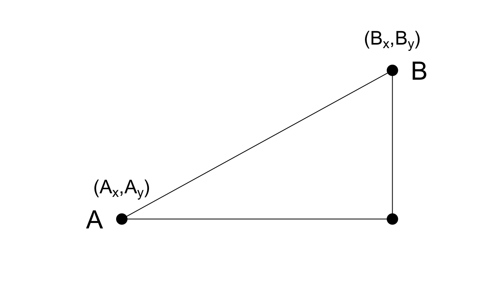

Im taking a course from EdX on High Dimension Data, and this is a post for me to note down the learning points and codes. I am interested in this course because I am often dealing with GC-MS data on flavor compounds found in different types of food, and I would like to carry out more high level analysis rather than just looking at percentage area for comparison. I think there is a lot that can be learnt from the life science sector in this sense, on how high dimensional data is carried out, how to apply clustering, principal component analysis.
Previously, I tried to use tidymodels for PCA, and would like to learn other approaches as well.
All the material below are from EdX. Most of the codes are in base R language. Personally, I find the tidymodels method more intuitive, but I can pick up the learning points on the theory behind analysing High Dimension Data, and see how the language evolved to the tidymodels method.
The main learning points from the course are:
- What is distance
- How to calculate distance (althought the calculation part is largely taken care of by R)
- What is projection
- How PC uses rotation to maximise variability for dimension reduction
- Importance of cross-validation, splitting data into training and test sets for machine learning
- Brief glimpse into hierarchical clustering, k-means clustering, principal component analysis.
- How confounding can give you different conclusions from the truth.
After this course, I would like to revisit the tidymodels approach and revise on what I learnt previously.
Resources
PH525x series - Biomedical Data Science http://genomicsclass.github.io/book/
R & Bioconductor Manual http://manuals.bioinformatics.ucr.edu/home/R_BioCondManual
Advanced R http://adv-r.had.co.nz/Data-structures.html
Github for course materials http://github.com/genomicsclass/labs https://github.com/genomicsclass/labs/tree/master/highdim
Week 1: Distance
Clustering is a methodology that requires us to define distance. When we cluster animals into groups, in a way, we are saying which animals are closer to each other.
In genomics literature, heatmaps are often used. In a heatmap, on the top and on the left, dendrograms are used to show clustering.
It is important to define distance between both rows and columns of data.
For simple two dimensional data, the distance between two points can be calculated by the Pythygoras theorem.
library(rafalib)
mypar()
plot(c(0,1,1),c(0,0,1),pch=16,cex=2,xaxt="n",yaxt="n",xlab="",ylab="",bty="n",xlim=c(-0.25,1.25),ylim=c(-0.25,1.25))
lines(c(0,1,1,0),c(0,0,1,0))
text(0,.2,expression(paste('(A'[x]*',A'[y]*')')),cex=1.5)
text(1,1.2,expression(paste('(B'[x]*',B'[y]*')')),cex=1.5)
text(-0.1,0,"A",cex=2)
text(1.1,1,"B",cex=2)

The euclidean distance between \(A\) and \(B\) is simply:
\[\sqrt{ (A_x-B_x)^2 + (A_y-B_y)^2}\]
For high dimensional data, we cant really do that because data is not two dimensional. High dimensional data has many rows and many columns (eg thousands of gene expression measurements for dozens of samples). (For my field, it may be hundreds of flavor compounds for dozens of food samples).
Distance is defined for two columns (or two samples), and distance between two rows (or two features, or in this case, two genes.)
This is the transposed version, probably unique to genomics field. From what I learnt from ISLR previously, rows are observations (samples), and columns are features (genes, or compounds).
library(devtools)
# install_github("genomicsclass/tissuesGeneExpression")
library(tissuesGeneExpression)
data(tissuesGeneExpression)
dim(e) ##e contains the expression data
[1] 22215 189table(tissue) ##tissue[i] tells us what tissue is represented by e[,i]
tissue
cerebellum colon endometrium hippocampus kidney
38 34 15 31 39
liver placenta
26 6 If we are interested in describing distance between samples (columns), or in finding genes (rows) that behave similarly across samples.
- Comparing 2 columns/samples: Distance between two samples i and j would be taking the sum of the differences squared, then take the square root.
\[ \mbox{dist}(i,j) = \sqrt{ \sum_{g=1}^{22215} (Y_{g,i}-Y_{g,j })^2 } \]
- Comparing 2 rows/features: take the same approach above.
\[ \mbox{dist}(h,g) = \sqrt{ \sum_{i=1}^{189} (Y_{h,i}-Y_{g,i})^2 } \] Note: In practice, distances between features are typically applied after standardizing the data for each feature.
Examples
We can now use the formulas above to compute distance. Lets compute distance between samples 1 and 2, both kidneys, and then to sample 87, a colon.
[1] 85.8546[1] 122.8919As expected, the kidneys are closer to each other. A faster way to compute this is using matrix algebra:
Now to compute all the distances at once, we have the function dist.
Because it computes the distance between each row (genes), and here we are interested in the distance between columns (samples), we transpose the matrix
d <- dist(t(e)) # t: transpose
class(d) # distance: not easy to work with this type of data, better to turn it into matrix
[1] "dist"# do not run d, may crash r, as it computes all pairwise distances between genes
Note that this produces an object of class dist and, to access the entries using row and column indices, we need to coerce it into a matrix:
as.matrix(d)[1,2] # first and second sample
[1] 85.8546as.matrix(d)[1,87] # first and 87th sample
[1] 122.8919# red is smaller and yellow is larger
It is important to remember that if we run dist on e, it will compute all pairwise distances between genes. This will try to create a \(22215 \times 22215\) matrix that may crash your R sessions.
Week 2: Dimension Reduction
to reduce the dimensions of the data, but at the same time, preserving important properties, such as the distance between samples.
for PCA, the units in the standard statistical analysis are in the rows.
for genomics, the units are in the columns.
Dimension Reduction Motivation
Visualizing data is one of the most, if not the most, important step in the analysis of high-throughput data. The right visualization method may reveal problems with the experimental data that can render the results from a standard analysis, although typically appropriate, completely useless.
We have shown methods for visualizing global properties of the columns or rows, but plots that reveal relationships between columns or between rows are more complicated due to the high dimensionality of data. Creating one single scatterplot of the data is impossible since points are very high dimensional.
We will describe powerful techniques for exploratory data analysis based on dimension reduction. The general idea is to reduce the dataset to have fewer dimensions, yet approximately preserve important properties, such as the distance between samples. If we are able to reduce down to, say, two dimensions, we can then easily make plots. The technique behind it all, the singular value decomposition (SVD), is also useful in other contexts. Before introducing the rather complicated mathematics behind the SVD, we will motivate the ideas behind it with a simple example.
Example: Reducing two dimensions to one
We consider an example with twin heights. Here we simulate 100 two dimensional points that represent the number of standard deviations each individual is from the mean height. Each point is a pair of twins:

(#fig:simulate_twin_heights)Simulated twin pair heights.
To help with the illustration, think of this as high-throughput gene expression data with the twin pairs representing the \(N\) samples and the two heights representing gene expression from two genes.
We are interested in the distance between any two samples. We can compute this using dist. For example, here is the distance between the two orange points in the figure above:
d=dist(t(y)) # must transpose in this case
as.matrix(d)[1,2] # easier to work with matrix than distance objects
[1] 1.140897What if making two dimensional plots was too complex and we were only able to make 1 dimensional plots. Can we, for example, reduce the data to a one dimensional matrix that preserves distances between points?
If we look back at the plot, and visualize a line between any pair of points, the length of this line is the distance between the two points. These lines tend to go along the direction of the diagonal. We have seen before that we can rotate the plot so that the diagonal is in the x-axis by making a MA-plot instead:
z1 = (y[1,]+y[2,])/2 #the sum
z2 = (y[1,]-y[2,]) #the difference
z = rbind( z1, z2) #matrix now same dimensions as y
thelim <- c(-3,3)
mypar(1,2)
plot(y[1,],y[2,],xlab="Twin 1 (standardized height)",
ylab="Twin 2 (standardized height)",
xlim=thelim,ylim=thelim)
points(y[1,1:2],y[2,1:2],col=2,pch=16)
plot(z[1,],z[2,],xlim=thelim,ylim=thelim,xlab="Average height",ylab="Difference in height")
points(z[1,1:2],z[2,1:2],col=2,pch=16)
Figure 1: Twin height scatterplot (left) and MA-plot (right).
Rotations
In the plot above, the distance between the two orange points remains roughly the same, relative to the distance between other points. This is true for all pairs of points. A simple re-scaling of the transformation we performed above will actually make the distances exactly the same. What we will do is multiply by a scalar so that the standard deviations of each point is preserved. The calculation is such that the matrices are orthogonal and it guarantees the SD-preserving properties described above. The distances are now exactly preserved:
A <- 1/sqrt(2)*matrix(c(1,1,1,-1),2,2)
z <- A%*%y
d <- dist(t(y))
d2 <- dist(t(z))
mypar(1,1)
plot(as.numeric(d),as.numeric(d2)) #as.numeric turns distances into long vector
abline(0,1,col=2)
(#fig:rotation_preserves_dist)Distance computed from original data and after rotation is the same.
We call this particular transformation a rotation of y.
mypar(1,2)
thelim <- c(-3,3)
plot(y[1,],y[2,],xlab="Twin 1 (standardized height)",
ylab="Twin 2 (standardized height)",
xlim=thelim,ylim=thelim)
points(y[1,1:2],y[2,1:2],col=2,pch=16)
plot(z[1,],z[2,],xlim=thelim,ylim=thelim,xlab="Average height",ylab="Difference in height")
points(z[1,1:2],z[2,1:2],col=2,pch=16)
Figure 2: Twin height scatterplot (left) and after rotation (right).
The reason we applied this transformation in the first place was because we noticed that to compute the distances between points, we followed a direction along the diagonal in the original plot, which after the rotation falls on the horizontal, or the first dimension of z. So this rotation actually achieves what we originally wanted: we can preserve the distances between points with just one dimension. Lets remove the second dimension of z and recompute distances:
d3 = dist(z[1,]) ##distance computed using just first dimension
mypar(1,1)
plot(as.numeric(d),as.numeric(d3))
abline(0,1)
(#fig:approx_dist)Distance computed with just one dimension after rotation versus actual distance.
The distance computed with just the one dimension provides a very good approximation to the actual distance and a very useful dimension reduction: from 2 dimensions to 1. This first dimension of the transformed data is actually the first principal component. This idea motivates the use of principal component analysis (PCA) and the singular value decomposition (SVD) to achieve dimension reduction more generally.
Important note on a difference to other explanations
If you search the web for descriptions of PCA, you will notice a difference in notation to how we describe it here. This mainly stems from the fact that it is more common to have rows represent units. In statistics this is also the most common way to represent the data: individuals in the rows.
However, for practical reasons, in genomics it is more common to represent units in the columns. For example, genes are rows and samples are columns. For this reason, in this book we explain PCA and all the math that goes with it in a slightly different way than it is usually done.
Basically, if you want our explanations to match others you have to transpose the matrices we show here.
Projections
Now that we have described the concept of dimension reduction and some of the applications of SVD and principal component analysis, we focus on more details related to the mathematics behind these. We start with projections. A projection is a linear algebra concept that helps us understand many of the mathematical operations we perform on high-dimensional data. For more details, you can review projects in a linear algebra book. Here we provide a quick review and then provide some data analysis related examples.
As a review, remember that projections minimize the distance between points and subspace.
We illustrate projections using a figure, in which the arrow on top is pointing to a point in space. In this particular cartoon, the space is two dimensional, but we should be thinking abstractly. The space is represented by the Cartesian plan and the line on which the little person stands is a subspace of points. The projection to this subspace is the place that is closest to the original point. Geometry tells us that we can find this closest point by dropping a perpendicular line (dotted line) from the point to the space. The little person is standing on the projection. The amount this person had to walk from the origin to the new projected point is referred to as the coordinate.
We can plot it like this:
mypar (1,1)
plot(c(0,4),c(0,4),xlab="Dimension 1",ylab="Dimension 2",type="n")
arrows(0,0,2,3,lwd=3)
text(2,3," Y",pos=4,cex=3)
Figure 3: Geometric representation of Y.
The following R code confirms this equation works:
mypar(1,1)
plot(c(0,4),c(0,4),xlab="Dimension 1",ylab="Dimension 2",type="n")
arrows(0,0,2,3,lwd=3)
abline(0,0.5,col="red",lwd=3) #if x=2c and y=c then slope is 0.5 (y=0.5x)
text(2,3," Y",pos=4,cex=3)
y=c(2,3)
x=c(2,1)
cc = crossprod(x,y)/crossprod(x)
segments(x[1]*cc,x[2]*cc,y[1],y[2],lty=2)
text(x[1]*cc,x[2]*cc,expression(hat(Y)),pos=4,cex=3)
Figure 4: Projection of Y onto new subspace.
Rotations
One of the most useful applications of projections relates to coordinate rotations. In data analysis, simple rotations can result in easier to visualize and interpret data.
library(rafalib)
mypar()
plot(c(-2,4),c(-2,4),xlab="Dimension 1",ylab="Dimension 2",
type="n",xaxt="n",yaxt="n",bty="n")
text(rep(0,6),c(c(-2,-1),c(1:4)),as.character(c(c(-2,-1),c(1:4))),pos=2)
text(c(c(-2,-1),c(1:4)),rep(0,6),as.character(c(c(-2,-1),c(1:4))),pos=1)
abline(v=0,h=0)
arrows(0,0,2,3,lwd=3)
segments(2,0,2,3,lty=2)
segments(0,3,2,3,lty=2)
text(2,3," Y",pos=4,cex=3)
Figure 5: Plot of (2,3) as coordinates along Dimension 1 (1,0) and Dimension 2 (0,1).
Graphically, we can see that the coordinates are the projections to the spaces defined by the new basis:
library(rafalib)
mypar()
plot(c(-2,4),c(-2,4),xlab="Dimension 1",ylab="Dimension 2",
type="n",xaxt="n",yaxt="n",bty="n")
text(rep(0,6),c(c(-2,-1),c(1:4)),as.character(c(c(-2,-1),c(1:4))),pos=2)
text(c(c(-2,-1),c(1:4)),rep(0,6),as.character(c(c(-2,-1),c(1:4))),pos=1)
abline(v=0,h=0)
abline(0,1,col="red")
abline(0,-1,col="red")
arrows(0,0,2,3,lwd=3)
y=c(2,3)
x1=c(1,1)##new basis
x2=c(0.5,-0.5)##new basis
c1 = crossprod(x1,y)/crossprod(x1)
c2 = crossprod(x2,y)/crossprod(x2)
segments(x1[1]*c1,x1[2]*c1,y[1],y[2],lty=2)
segments(x2[1]*c2,x2[2]*c2,y[1],y[2],lty=2)
text(2,3," Y",pos=4,cex=3)
Figure 6: Plot of (2,3) as a vector in a rotatated space, relative to the original dimensions.
Example: Twin heights
Figure 7: Twin 2 heights versus twin 1 heights.
Here are the rotations:

Figure 8: Rotation of twin 2 heights versus twin 1 heights.
What we have done here is rotate the data so that the first coordinate is the average height, while the second is the difference between twin heights.
We have used the singular value decomposition to find principal components. It is sometimes useful to think of the SVD as a rotation, in which the dimensions are ordered by how much variance they explain.
Singular Value Decomposition
In the previous section, we motivated dimension reduction and showed a transformation that permitted us to approximate the distance between two dimensional points with just one dimension.
The singular value decomposition (SVD) is a generalization of the algorithm we used in the motivational section.
As in the example, the SVD provides a transformation of the original data. This transformation has some very useful properties.
Applying the SVD to the motivating example we have:
We can immediately see that applying the SVD results in a transformation very similar to the one we used in the motivating example:
The plot we showed after the rotation was showing what we call the principal components: the second plotted against the first.

Figure 9: Second PC plotted against first PC for the twins height data.
SVD is related to principal component that explicitly tries to find rotations that maximise the variability explained.
Applying SVD to real dataset
Lets compute the SVD on the gene expression table we have been working with. We will take a subset of 500 genes so that computations are faster.
The svd command returns the three matrices (only the diagonal entries are returned for \(D\))
First note that we can in fact reconstruct y:
If we look at the sum of squares, we see that the last few are quite close to 0 (perhaps we have some replicated columns).
plot(s$d)
(#fig:D_entries)Entries of the diagonal of D for gene expression data.
You commonly see this described as explaining less variance. This implies that for a large matrix, by the time you get to the last columns, it is possible that there is not much left to explain As an example, we will look at what happens if we remove the four last columns:
[1] 3.275158e-14The largest residual is practically 0, and we need 4 fewer dimensions to transmit the information.
In this particular dataset, we can obtain a good approximation keeping only 94 columns. The following plots are useful for seeing how much of the variability is explained by each column:

(#fig:percent_var_explained)Percent variance explained by each principal component of gene expression data.
We can also make a cumulative plot:
(#fig:cum_variance_explained)Cumulative variance explained by principal components of gene expression data.
Therefore, by using only half as many dimensions, we retain most of the variability in our data:
We say that we explain 96% of the variability.
Note that we can compute this proportion from \(D\):
The entries of \(D\) therefore tell us how much each PC contributes in term of variability explained.
Highly correlated data
To help understand how the SVD works, we construct a dataset with two highly correlated columns.
For example:
x x
x 1.0000000 0.9999263
x 0.9999263 1.0000000The SVD helps us notice that we explain almost all the variability with just this first column:
In cases with many correlated columns, we can achieve great dimension reduction:
m <- 100
n <- 25
x <- rnorm(m)
e <- rnorm(n*m,0,0.01)
Y <- replicate(n,x)+e
d <- svd(Y)$d
d[1]^2/sum(d^2)
[1] 0.9999123Multi-Dimensional Scaling Plots
We will motivate multi-dimensional scaling (MDS) plots with a gene expression example. To simplify the illustration we will only consider three tissues:
library(rafalib)
library(tissuesGeneExpression)
data(tissuesGeneExpression)
colind <- tissue%in%c("kidney","colon","liver") # only these three tissues
mat <- e[,colind]
group <- factor(tissue[colind])
dim(mat) # 22215 features
[1] 22215 99As an exploratory step, we wish to know if gene expression profiles stored in the columns of mat show more similarity between tissues than across tissues. Unfortunately, as mentioned above, we cant plot multi-dimensional points. In general, we prefer two-dimensional plots, but making plots for every pair of genes or every pair of samples is not practical. Multi-Dimensionsal Scaling (MDS) plots become a powerful tool in this situation.
s <- svd(mat-rowMeans(mat))
PC1 <- s$d[1]*s$v[,1]
PC2 <- s$d[2]*s$v[,2]
mypar(1,1)
plot(PC1,PC2,pch=21,bg=as.numeric(group))
legend("bottomright",levels(group),col=seq(along=levels(group)),pch=15,cex=1.5)
Figure 10: Multi-dimensional scaling (MDS) plot for tissue gene expression data.
Note that the points separate by tissue type as expected. Now the accuracy of the approximation above depends on the proportion of variance explained by the first two principal components. As we showed above, we can quickly see this by plotting the variance explained plot:
Although the first two PCs explain over 50% of the variability, there is plenty of information that this plot does not show. However, it is an incredibly useful plot for obtaining, via visualization, a general idea of the distance between points. Also, notice that we can plot other dimensions as well to search for patterns. Here are the 3rd and 4th PCs:
PC3 <- s$d[3]*s$v[,3]
PC4 <- s$d[4]*s$v[,4]
mypar(1,1)
plot(PC3,PC4,pch=21,bg=as.numeric(group))
legend("bottomright",levels(group),col=seq(along=levels(group)),pch=15,cex=1.5)
(#fig:PC_3_and_4)Third and fourth principal components.
Note that the 4th PC shows a strong separation within the kidney samples. Later we will learn about batch effects, which might explain this finding.
cmdscale
Although we used the svd functions above, there is a special function that is specifically made for multi-dimensional scaling plots.
It takes a distance object as an argument and then uses principal component analysis to provide the best approximation to this distance that can be obtained with \(k\) dimensions.
This function is more efficient because one does not have to perform the full SVD, which can be time consuming.
By default it returns two dimensions, but we can change that through the parameter k which defaults to 2.
d <- dist(t(mat))
mds <- cmdscale(d)
mypar()
plot(mds[,1],mds[,2],bg=as.numeric(group),pch=21,
xlab="First dimension",ylab="Second dimension")
legend("bottomleft",levels(group),col=seq(along=levels(group)),pch=15)
Figure 11: MDS computed with cmdscale function.
These two approaches are equivalent up to an arbitrary sign change.
mypar(1,2)
for(i in 1:2){
plot(mds[,i],s$d[i]*s$v[,i],main=paste("PC",i))
b = ifelse( cor(mds[,i],s$v[,i]) > 0, 1, -1)
abline(0,b) ##b is 1 or -1 depending on the arbitrary sign "flip"
}
(#fig:mds_same_as_svd)Comparison of MDS first two PCs to SVD first two PCs.
Why we substract the mean
In all calculations above we subtract the row means before we compute the singular value decomposition.
We are trying to approximate the distance between columns (samples), and removing row averages reduces the total variation to make the SVD approximation better.
Principal Component Analysis
We have already mentioned principal component analysis (PCA) above and noted its relation to the SVD. Here we provide further mathematical details.
Example: Twin heights
We started the motivation for dimension reduction with a simulated example and showed a rotation that is very much related to PCA.
(#fig:simulate_twin_heights_again)Twin heights scatter plot.
What are principal components (PCs)?
We are looking for a transformation in which the coordinates show high variability.
The principal components
The orthogonal vector that maximizes the sum of squares is referred to as the first PC. The weights used to obtain this PC are referred to as the loadings. Using the language of rotations, it is also referred to as the direction of the first PC, which are the new coordinates.
To obtain the second PC, we repeat the exercise above, but for the residuals.
prcomp
We have shown how to obtain PCs using the SVD. However, R has a function specifically designed to find the principal components. In this case, the data is centered by default. The following function:
produces the same results as the SVD up to arbitrary sign flips:
(#fig:pca_svd)Plot showing SVD and prcomp give same results.
The loadings can be found this way:
pc$rotation # loadings
PC1 PC2
[1,] 0.7072304 0.7069831
[2,] 0.7069831 -0.7072304which are equivalent (up to a sign flip) to:
s$u
[,1] [,2]
[1,] -0.7072304 -0.7069831
[2,] -0.7069831 0.7072304The equivalent of the variance explained is included in the:
pc$sdev
[1] 1.2542672 0.2141882We take the transpose of Y because prcomp assumes the previously discussed ordering: units/samples in row and features in columns.
Week 3: Basic Machine Learning
Clustering
Machine learning is a very broad topic and a highly active research area. In the life sciences, much of what is described as precision medicine is an application of machine learning to biomedical data. The general idea is to predict or discover outcomes from measured predictors. Can we discover new types of cancer from gene expression profiles? Can we predict drug response from a series of genotypes? Here we give a very brief introductions to two major machine learning components: clustering and class prediction.
To illustrate the main application of clustering in the life sciences, lets pretend that we dont know these are different tissues and are interested in clustering. The first step is to compute the distance between each sample:
Hierarchical clustering
With the distance between each pair of samples computed, we need clustering algorithms to join them into groups. Hierarchical clustering is one of the many clustering algorithms available to do this. Each sample is assigned to its own group and then the algorithm continues iteratively, joining the two most similar clusters at each step, and continuing until there is just one group.
While we have defined distances between samples, we have not yet defined distances between groups. There are various ways this can be done and they all rely on the individual pairwise distances. The helpfile for hclust includes detailed information.
We can perform hierarchical clustering based on the distances defined above using the hclust function. This function returns an hclust object that describes the groupings that were created using the algorithm described above. The plot method represents these relationships with a tree or dendrogram:
Call:
hclust(d = d)
Cluster method : complete
Distance : euclidean
Number of objects: 189 plot(hc,cex=0.5)
myplclust(hc, labels=tissue, lab.col=as.fumeric(tissue), cex=0.5)
Visually, it does seem as if the clustering technique has discovered the tissues. However, hierarchical clustering does not define specific clusters, but rather defines the dendrogram above. From the dendrogram we can decipher the distance between any two groups by looking at the height at which the two groups split into two. To define clusters, we need to cut the tree at some distance and group all samples that are within that distance into groups below. To visualize this, we draw a horizontal line at the height we wish to cut and this defines that line. We use 120 as an example:
myplclust(hc, labels=tissue, lab.col=as.fumeric(tissue),cex=0.5)
abline(h=120)
If we use the line above to cut the tree into clusters, we can examine how the clusters overlap with the actual tissues:
cluster
true 1 2 3 4 5 6 7 8 9 10 11 12 13 14
cerebellum 0 0 0 0 31 0 0 0 2 0 0 5 0 0
colon 0 0 0 0 0 0 34 0 0 0 0 0 0 0
endometrium 0 0 0 0 0 0 0 0 0 0 15 0 0 0
hippocampus 0 0 12 19 0 0 0 0 0 0 0 0 0 0
kidney 9 18 0 0 0 10 0 0 2 0 0 0 0 0
liver 0 0 0 0 0 0 0 24 0 2 0 0 0 0
placenta 0 0 0 0 0 0 0 0 0 0 0 0 2 4We can also ask cutree to give us back a given number of clusters. The function then automatically finds the height that results in the requested number of clusters:
cluster
true 1 2 3 4 5 6 7 8
cerebellum 0 0 31 0 0 2 5 0
colon 0 0 0 34 0 0 0 0
endometrium 15 0 0 0 0 0 0 0
hippocampus 0 12 19 0 0 0 0 0
kidney 37 0 0 0 0 2 0 0
liver 0 0 0 0 24 2 0 0
placenta 0 0 0 0 0 0 0 6In both cases we do see that, with some exceptions, each tissue is uniquely represented by one of the clusters. In some instances, the one tissue is spread across two tissues, which is due to selecting too many clusters. Selecting the number of clusters is generally a challenging step in practice and an active area of research.
k-means
We can also cluster with the kmeans function to perform k-means clustering. As an example, lets run k-means on the samples in the space of the first two genes:
[1] "cluster" "centers" "totss" "withinss"
[5] "tot.withinss" "betweenss" "size" "iter"
[9] "ifault" mypar(1,2)
plot(e[1,], e[2,], col=as.fumeric(tissue), pch=16)
plot(e[1,], e[2,], col=km$cluster, pch=16)
In the first plot, color represents the actual tissues, while in the second, color represents the clusters that were defined by kmeans. We can see from tabulating the results that this particular clustering exercise did not perform well:
table(true=tissue,cluster=km$cluster)
cluster
true 1 2 3 4 5 6 7
cerebellum 1 0 0 13 6 4 14
colon 3 0 22 0 6 3 0
endometrium 3 0 0 6 0 2 4
hippocampus 0 0 0 0 16 15 0
kidney 10 0 2 1 0 9 17
liver 0 18 0 7 0 0 1
placenta 4 0 0 1 0 0 1This is very likely due to the fact the the first two genes are not informative regarding tissue type. We can see this in the first plot above. If we instead perform k-means clustering using all of the genes, we obtain a much improved result. To visualize this, we can use an MDS plot:
By tabulating the results, we see that we obtain a similar answer to that obtained with hierarchical clustering.
table(true=tissue,cluster=km$cluster)
cluster
true 1 2 3 4 5 6 7
cerebellum 0 2 0 5 0 0 31
colon 0 0 34 0 0 0 0
endometrium 0 0 0 0 0 15 0
hippocampus 0 0 0 31 0 0 0
kidney 0 2 0 0 19 18 0
liver 24 2 0 0 0 0 0
placenta 0 0 6 0 0 0 0Heatmaps
Heatmaps are ubiquitous in the genomics literature. They are very useful plots for visualizing the measurements for a subset of rows over all the samples. A dendrogram is added on top and on the side that is created with hierarchical clustering. We will demonstrate how to create heatmaps from within R. Lets begin by defining a color palette:
library(RColorBrewer)
hmcol <- colorRampPalette(brewer.pal(9, "GnBu"))(100)
Now, pick the genes with the top variance over all samples:
While a heatmap function is included in R, we recommend the heatmap.2 function from the gplots package on CRAN because it is a bit more customized. For example, it stretches to fill the window. Here we add colors to indicate the tissue on the top:
library(gplots) ##Available from CRAN
cols <- palette(brewer.pal(8, "Dark2"))[as.fumeric(tissue)]
head(cbind(colnames(e),cols))
cols
[1,] "GSM11805.CEL.gz" "#1B9E77"
[2,] "GSM11814.CEL.gz" "#1B9E77"
[3,] "GSM11823.CEL.gz" "#1B9E77"
[4,] "GSM11830.CEL.gz" "#1B9E77"
[5,] "GSM12067.CEL.gz" "#1B9E77"
[6,] "GSM12075.CEL.gz" "#1B9E77"heatmap.2(e[idx,], labCol=tissue,
trace="none",
ColSideColors=cols,
col=hmcol)
We did not use tissue information to create this heatmap, and we can quickly see, with just 40 genes, good separation across tissues.
Classification
Conditional Probabilities and Expectations
Prediction problems can be divided into categorical and continuous outcomes. However, many of the algorithms can be applied to both due to the connection between conditional probabilities and conditional expectations.
Regression in the context of prediction
We use the son and father height example to illustrate how regression can be interpreted as a machine learning technique. In our example, we are trying to predict the sons height (Y) based on the fathers (X). Here we have only one predictor. Now if we were asked to predict the height of a randomly selected son, we would go with the average height:
library(rafalib)
mypar(1,1)
data(father.son,package="UsingR")
x=round(father.son$fheight) ##round to nearest inch
y=round(father.son$sheight)
hist(y,breaks=seq(min(y),max(y)))
abline(v=mean(y),col="red",lwd=2)
(#fig:height_hist)Histogram of son heights.
In this case, we can also approximate the distribution of Y as normal, which implies the mean maximizes the probability density.
Lets imagine that we are given more information. We are told that the father of this randomly selected son has a height of 71 inches (1.25 SDs taller than the average). What is our prediction now?
mypar(1,2)
plot(x,y,xlab="Father's height in inches",ylab="Son's height in inches",
main=paste("correlation =",signif(cor(x,y),2)))
abline(v=c(-0.35,0.35)+71,col="red")
hist(y[x==71],xlab="Heights",nc=8,main="",xlim=range(y))
(#fig:conditional_distribution)Son versus father height (left) with the red lines denoting the stratum defined by conditioning on fathers being 71 inches tall. Conditional distribution: son height distribution of stratum defined by 71 inch fathers.
The best guess is still the expectation, but our strata has changed from all the data, to only the Y with X=71. So we can stratify and take the average, which is the conditional expectation.
mypar(1,2)
plot(x,y,xlab="Father's height in inches",ylab="Son's height in inches",
main=paste("correlation =",signif(cor(x,y),2)))
abline(v=c(-0.35,0.35)+71,col="red")
fit <- lm(y~x)
abline(fit,col=1)
hist(y[x==71],xlab="Heights",nc=8,main="",xlim=range(y))
abline(v = fit$coef[1] + fit$coef[2]*71, col=1)
Figure 12: Son versus father height showing predicted heights based on regression line (left). Conditional distribution with vertical line representing regression prediction.
Class Prediction
Here we give a brief introduction to the main task of machine learning: class prediction. In fact, many refer to class prediction as machine learning and we sometimes use the two terms interchangeably. We give a very brief introduction to this vast topic, focusing on some specific examples.
Some of the examples we give here are motivated by those in the excellent textbook The Elements of Statistical Learning: Data Mining, Inference, and Prediction, by Trevor Hastie, Robert Tibshirani and Jerome Friedman, which can be found here.
Similar to inference in the context of regression, Machine Learning (ML) studies the relationships between outcomes \(Y\) and covariates \(X\). In ML, we call \(X\) the predictors or features. The main difference between ML and inference is that, in ML, we are interested mainly in predicting \(Y\) using \(X\). Statistical models are used, but while in inference we estimate and interpret model parameters, in ML they are mainly a means to an end: predicting \(Y\).
Here we introduce the main concepts needed to understand ML, along with two specific algorithms: regression and k nearest neighbors (kNN). Keep in mind that there are dozens of popular algorithms that we do not cover here.
In a previous section, we covered the very simple one-predictor case. However, most of ML is concerned with cases with more than one predictor.
For illustration purposes, we move to a case in which \(X\) is two dimensional and \(Y\) is binary. We simulate a situation with a non-linear relationship using an example from the Hastie, Tibshirani and Friedman book.
In the plot below, we show the actual values of \(f(x_1,x_2)=E(Y \mid X_1=x_1,X_2=x_2)\) using colors. The following code is used to create a relatively complex conditional probability function. We create the test and train data we use later (code not shown). Here is the plot of \(f(x_1,x_2)\) with red representing values close to 1, blue representing values close to 0, and yellow values in between.
(#fig:conditional_prob)Probability of Y=1 as a function of X1 and X2. Red is close to 1, yellow close to 0.5, and blue close to 0.
If we show points for which \(E(Y \mid X=x)>0.5\) in red and the rest in blue, we see the boundary region that denotes the boundary in which we switch from predicting 0 to 1.
(#fig:bayes_rule)Bayes rule. The line divides part of the space for which probability is larger than 0.5 (red) and lower than 0.5 (blue).
The above plots relate to the truth that we do not get to see. Most ML methodology is concerned with estimating \(f(x)\). A typical first step is usually to consider a sample, referred to as the training set, to estimate \(f(x)\). We will review two specific ML techniques. First, we need to review the main concept we use to evaluate the performance of these methods.
Training and test sets
In the code (not shown) for the first plot in this chapter, we created a test and a training set. We plot them here:
#x, test, cols, and coltest were created in code that was not shown
#x is training x1 and x2, test is test x1 and x2
#cols (0=blue, 1=red) are training observations
#coltests are test observations
mypar(1,2)
plot(x,pch=21,bg=cols,xlab="X1",ylab="X2",xlim=XLIM,ylim=YLIM)
plot(test,pch=21,bg=colstest,xlab="X1",ylab="X2",xlim=XLIM,ylim=YLIM)
(#fig:test_train)Training data (left) and test data (right).
You will notice that the test and train set have similar global properties since they were generated by the same random variables (more blue towards the bottom right), but are, by construction, different. The reason we create test and training sets is to detect over-training by testing on a different data than the one used to fit models or train algorithms. We will see how important this is below.
Predicting with regression
A first naive approach to this ML problem is to fit a two variable linear regression model:
##x and y were created in the code (not shown) for the first plot
#y is outcome for the training set
X1 <- x[,1] ##these are the covariates
X2 <- x[,2]
fit1 <- lm(y~X1+X2)
Once we the have fitted values, we can estimate \(f(x_1,x_2)\) with \(\hat{f}(x_1,x_2)=\hat{\beta}_0 + \hat{\beta}_1x_1 +\hat{\beta}_2 x_2\). To provide an actual prediction, we simply predict 1 when \(\hat{f}(x_1,x_2)>0.5\). We now examine the error rates in the test and training sets and also plot the boundary region:
##prediction on train
yhat <- predict(fit1)
yhat <- as.numeric(yhat>0.5)
cat("Linear regression prediction error in train:",1-mean(yhat==y),"\n")
Linear regression prediction error in train: 0.2975 We can quickly obtain predicted values for any set of values using the predict function:
yhat <- predict(fit1,newdata=data.frame(X1=newx[,1],X2=newx[,2]))
Now we can create a plot showing where we predict 1s and where we predict 0s, as well as the boundary. We can also use the predict function to obtain predicted values for our test set. Note that nowhere do we fit the model on the test set:
colshat <- yhat
colshat[yhat>=0.5] <- mycols[2]
colshat[yhat<0.5] <- mycols[1]
m <- -fit1$coef[2]/fit1$coef[3] #boundary slope
b <- (0.5 - fit1$coef[1])/fit1$coef[3] #boundary intercept
##prediction on test
yhat <- predict(fit1,newdata=data.frame(X1=test[,1],X2=test[,2]))
yhat <- as.numeric(yhat>0.5)
cat("Linear regression prediction error in test:",1-mean(yhat==ytest),"\n")
Linear regression prediction error in test: 0.32 plot(test,type="n",xlab="X1",ylab="X2",xlim=XLIM,ylim=YLIM)
abline(b,m)
points(newx,col=colshat,pch=16,cex=0.35)
##test was created in the code (not shown) for the first plot
points(test,bg=cols,pch=21)
(#fig:regression_prediction)We estimate the probability of 1 with a linear regression model with X1 and X2 as predictors. The resulting prediction map is divided into parts that are larger than 0.5 (red) and lower than 0.5 (blue).
The error rates in the test and train sets are quite similar. Thus, we do not seem to be over-training. This is not surprising as we are fitting a 2 parameter model to 400 data points. However, note that the boundary is a line. Because we are fitting a plane to the data, there is no other option here. The linear regression method is too rigid. The rigidity makes it stable and avoids over-training, but it also keeps the model from adapting to the non-linear relationship between \(Y\) and \(X\). We saw this before in the smoothing section. The next ML technique we consider is similar to the smoothing techniques described before.
K-nearest neighbor
K-nearest neighbors (kNN) is similar to bin smoothing, but it is easier to adapt to multiple dimensions. Basically, for any point \(x\) for which we want an estimate, we look for the k nearest points and then take an average of these points. This gives us an estimate of \(f(x_1,x_2)\), just like the bin smoother gave us an estimate of a curve. We can now control flexibility through \(k\). Here we compare \(k=1\) and \(k=100\).
library(class)
mypar(2,2)
for(k in c(1,100)){
##predict on train
yhat <- knn(x,x,y,k=k)
cat("KNN prediction error in train:",1-mean((as.numeric(yhat)-1)==y),"\n")
##make plot
yhat <- knn(x,test,y,k=k)
cat("KNN prediction error in test:",1-mean((as.numeric(yhat)-1)==ytest),"\n")
}
KNN prediction error in train: 0
KNN prediction error in test: 0.3375
KNN prediction error in train: 0.2725
KNN prediction error in test: 0.3125 To visualize why we make no errors in the train set and many errors in the test set when \(k=1\) and obtain more stable results from \(k=100\), we show the prediction regions (code not shown):
Figure 13: Prediction regions obtained with kNN for k=1 (top) and k=200 (bottom). We show both train (left) and test data (right).
When \(k=1\), we make no mistakes in the training test since every point is its closest neighbor and it is equal to itself. However, we see some islands of blue in the red area that, once we move to the test set, are more error prone. In the case \(k=100\), we do not have this problem and we also see that we improve the error rate over linear regression. We can also see that our estimate of \(f(x_1,x_2)\) is closer to the truth.
Bayes rule
Here we include a comparison of the test and train set errors for various values of \(k\). We also include the error rate that we would make if we actually knew \(\mbox{E}(Y \mid X_1=x1,X_2=x_2)\) referred to as Bayes Rule.
We start by computing the error rates
###Bayes Rule
yhat <- apply(test,1,p)
cat("Bayes rule prediction error in train",1-mean(round(yhat)==y),"\n")
Bayes rule prediction error in train 0.2825 bayes.error=1-mean(round(yhat)==y)
train.error <- rep(0,16)
test.error <- rep(0,16)
for(k in seq(along=train.error)){
##predict on train
yhat <- knn(x,x,y,k=2^(k/2))
train.error[k] <- 1-mean((as.numeric(yhat)-1)==y)
##prediction on test
yhat <- knn(x,test,y,k=2^(k/2))
test.error[k] <- 1-mean((as.numeric(yhat)-1)==y)
}
and then plot the error rates against values of \(k\). We also show the Bayes rules error rate as a horizontal line.
ks <- 2^(seq(along=train.error)/2)
mypar()
plot(ks,train.error,type="n",xlab="K",ylab="Prediction Error",log="x",
ylim=range(c(test.error,train.error)))
lines(ks,train.error,type="b",col=4,lty=2,lwd=2)
lines(ks,test.error,type="b",col=5,lty=3,lwd=2)
abline(h=bayes.error,col=6)
legend("bottomright",c("Train","Test","Bayes"),col=c(4,5,6),lty=c(2,3,1),box.lwd=0)

(#fig:bayes_rule2)Prediction error in train (pink) and test (green) versus number of neighbors. The yellow line represents what one obtains with Bayes Rule.
Note that these error rates are random variables and have standard errors. In the next section we describe cross-validation which helps reduce some of this variability. However, even with this variability, the plot clearly shows the problem of over-fitting when using values lower than 20 and under-fitting with values above 100.
Smoothing
Smoothing is a very powerful technique used all across data analysis. It is designed to estimate \(f(x)\) when the shape is unknown, but assumed to be smooth. The general idea is to group data points that are expected to have similar expectations and compute the average, or fit a simple parametric model. We illustrate two smoothing techniques using a gene expression example.
The following data are gene expression measurements from replicated RNA samples.
##Following three packages are available from Bioconductor
# if (!requireNamespace("BiocManager", quietly = TRUE))
# install.packages("BiocManager")
# BiocManager::install("Biobase")
# BiocManager::install("SpikeIn")
# BiocManager::install("hgu95acdf")
library(Biobase)
library(SpikeIn)
library(hgu95acdf)
data(SpikeIn95)
We consider the data used in an MA-plot comparing two replicated samples (\(Y\) = log ratios and \(X\) = averages) and take down-sample in a way that balances the number of points for different strata of \(X\) (code not shown):
In the MA plot we see that \(Y\) depends on \(X\). This dependence must be a bias because these are based on replicates, which means \(Y\) should be 0 on average regardless of \(X\). We want to predict \(f(x)=\mbox{E}(Y \mid X=x)\) so that we can remove this bias. Linear regression does not capture the apparent curvature in \(f(x)\):
mypar()
plot(X,Y)
fit <- lm(Y~X)
points(X,Y,pch=21,bg=ifelse(Y>fit$fitted,1,3))
abline(fit,col=2,lwd=4,lty=2)
(#fig:MAplot_with_regression_line)MA-plot comparing gene expression from two arrays with fitted regression line. The two colors represent positive and negative residuals.
The points above the fitted line (green) and those below (purple) are not evenly distributed. We therefore need an alternative more flexible approach.
Bin Smoothing
Instead of fitting a line, lets go back to the idea of stratifying and computing the mean. This is referred to as bin smoothing. The general idea is that the underlying curve is smooth enough so that, in small bins, the curve is approximately constant. If we assume the curve is constant, then all the \(Y\) in that bin have the same expected value. For example, in the plot below, we highlight points in a bin centered at 8.6, as well as the points of a bin centered at 12.1, if we use bins of size 1. We also show the fitted mean values for the \(Y\) in those bins with dashed lines (code not shown):
Figure 15: MAplot comparing gene expression from two arrays with bin smoother fit shown for two points.
By computing this mean for bins around every point, we form an estimate of the underlying curve \(f(x)\). Below we show the procedure happening as we move from the smallest value of \(x\) to the largest. We show 10 intermediate cases as well (code not shown):
(#fig:bin_smoothing_demo)Illustration of how bin smoothing estimates a curve. Showing 12 steps of process.
The final result looks like this (code not shown):
(#fig:bin_smooth_final)MA-plot with curve obtained with bin-smoothed curve shown.
There are several functions in R that implement bin smoothers. One example is ksmooth. However, in practice, we typically prefer methods that use slightly more complicated models than fitting a constant. The final result above, for example, is somewhat wiggly. Methods such as loess, which we explain next, improve on this.
Loess
Local weighted regression (loess) is similar to bin smoothing in principle. The main difference is that we approximate the local behavior with a line or a parabola. This permits us to expand the bin sizes, which stabilizes the estimates. Below we see lines fitted to two bins that are slightly larger than those we used for the bin smoother (code not shown). We can use larger bins because fitting lines provide slightly more flexibility.
Figure 16: MA-plot comparing gene expression from two arrays with bin local regression fit shown for two points.
As we did for the bin smoother, we show 12 steps of the process that leads to a loess fit (code not shown):
(#fig:loess_demo)Illustration of how loess estimates a curve. Showing 12 steps of the process.
The final result is a smoother fit than the bin smoother since we use larger sample sizes to estimate our local parameters (code not shown):

(#fig:loess_final)MA-plot with curve obtained with loess.
The function loess performs this analysis for us:
fit <- loess(Y~X, degree=1, span=1/3)
newx <- seq(min(X),max(X),len=100)
smooth <- predict(fit,newdata=data.frame(X=newx))
mypar ()
plot(X,Y,col="darkgrey",pch=16)
lines(newx,smooth,col="black",lwd=3)
Figure 17: Loess fitted with the loess function.
There are three other important differences between loess and the typical bin smoother. The first is that rather than keeping the bin size the same, loess keeps the number of points used in the local fit the same. This number is controlled via the span argument which expects a proportion. For example, if N is the number of data points and span=0.5, then for a given \(x\) , loess will use the 0.5*N closest points to \(x\) for the fit. The second difference is that, when fitting the parametric model to obtain \(f(x)\), loess uses weighted least squares, with higher weights for points that are closer to \(x\). The third difference is that loess has the option of fitting the local model robustly. An iterative algorithm is implemented in which, after fitting a model in one iteration, outliers are detected and downweighted for the next iteration. To use this option, we use the argument family="symmetric".
Cross-validation
Here we describe cross-validation: one of the fundamental methods in machine learning for method assessment and picking parameters in a prediction or machine learning task. Suppose we have a set of observations with many features and each observation is associated with a label. We will call this set our training data. Our task is to predict the label of any new samples by learning patterns from the training data. For a concrete example, lets consider gene expression values, where each gene acts as a feature. We will be given a new set of unlabeled data (the test data) with the task of predicting the tissue type of the new samples.
If we choose a machine learning algorithm with a tunable parameter, we have to come up with a strategy for picking an optimal value for this parameter. We could try some values, and then just choose the one which performs the best on our training data, in terms of the number of errors the algorithm would make if we apply it to the samples we have been given for training. However, we have seen how this leads to over-fitting.
Lets start by loading the tissue gene expression dataset:
For illustration purposes, we will drop one of the tissues which doesnt have many samples:
table(tissue)
tissue
cerebellum colon endometrium hippocampus kidney
38 34 15 31 39
liver placenta
26 6 This tissue will not form part of our example.
Now lets try out k-nearest neighbors for classification, using \(k=5\). What is our average error in predicting the tissue in the training set, when weve used the same data for training and for testing?
We have no errors in prediction in the training set with \(k=5\). What if we use \(k=1\)?
Trying to classify the same observations as we use to train the model can be very misleading. In fact, for k-nearest neighbors, using k=1 will always give 0 classification error in the training set, because we use the single observation to classify itself. The reliable way to get a sense of the performance of an algorithm is to make it give a prediction for a sample it has never seen. Similarly, if we want to know what the best value for a tunable parameter is, we need to see how different values of the parameter perform on samples, which are not in the training data.
Cross-validation is a widely-used method in machine learning, which solves this training and test data problem, while still using all the data for testing the predictive accuracy. It accomplishes this by splitting the data into a number of folds. If we have \(N\) folds, then the first step of the algorithm is to train the algorithm using \((N-1)\) of the folds, and test the algorithms accuracy on the single left-out fold. This is then repeated N times until each fold has been used as in the test set. If we have \(M\) parameter settings to try out, then this is accomplished in an outer loop, so we have to fit the algorithm a total of \(N \times M\) times.
We will use the createFolds function from the caret package to make 5 folds of our gene expression data, which are balanced over the tissues. Dont be confused by the fact that the createFolds function uses the same letter k as the k in k-nearest neighbors. These k are totally unrelated. The caret function createFolds is asking for how many folds to create, the \(N\) from above. The k in the knn function is for how many closest observations to use in classifying a new sample. Here we will create 10 folds:
library(caret)
set.seed(1)
idx <- createFolds(y, k=10)
sapply(idx, length)
Fold01 Fold02 Fold03 Fold04 Fold05 Fold06 Fold07 Fold08 Fold09 Fold10
19 19 18 18 19 18 20 16 16 20 The folds are returned as a list of numeric indices. The first fold of data is therefore:
y[idx[[1]]] ##the labels
[1] "kidney" "hippocampus" "hippocampus" "hippocampus"
[5] "cerebellum" "cerebellum" "cerebellum" "kidney"
[9] "kidney" "kidney" "colon" "colon"
[13] "colon" "liver" "endometrium" "endometrium"
[17] "liver" "liver" "cerebellum" head( X[idx[[1]], 1:3] ) ##the genes (only showing the first 3 genes...)
1007_s_at 1053_at 117_at
GSM12105.CEL.gz 9.913031 6.337478 7.983850
GSM21209.cel.gz 11.667431 5.785190 7.666343
GSM21215.cel.gz 10.361340 5.663634 7.328729
GSM21218.cel.gz 10.757734 5.984170 8.525524
GSM87066.cel.gz 9.746007 5.886079 7.459517
GSM87085.cel.gz 9.864295 5.753874 7.712646We can see that, in fact, the tissues are fairly equally represented across the 10 folds:
Fold01 Fold02 Fold03 Fold04 Fold05 Fold06 Fold07 Fold08
cerebellum 4 4 4 4 4 3 4 3
colon 3 4 4 3 3 3 4 3
endometrium 2 1 1 1 2 2 2 1
hippocampus 3 3 3 3 3 3 3 3
kidney 4 4 4 4 4 4 4 4
liver 3 3 2 3 3 3 3 2
Fold09 Fold10
cerebellum 4 4
colon 3 4
endometrium 1 2
hippocampus 3 4
kidney 3 4
liver 2 2Because tissues have very different gene expression profiles, predicting tissue with all genes will be very easy. For illustration purposes we will try to predict tissue type with just two dimensional data. We will reduce the dimension of our data using cmdscale:
library(rafalib)
mypar()
Xsmall <- cmdscale(dist(X))
plot(Xsmall,col=as.fumeric(y))
legend("topleft",levels(factor(y)),fill=seq_along(levels(factor(y))))
Figure 18: First two PCs of the tissue gene expression data with color representing tissue. We use these two PCs as our two predictors throughout.
Now we can try out the k-nearest neighbors method on a single fold. We provide the knn function with all the samples in Xsmall except those which are in the first fold. We remove these samples using the code -idx[[1]] inside the square brackets. We then use those samples in the test set. The cl argument is for the true classifications or labels (here, tissue) of the training data. We use 5 observations to classify in our k-nearest neighbor algorithm:
pred <- knn(train=Xsmall[ -idx[[1]] , ], test=Xsmall[ idx[[1]], ], cl=y[ -idx[[1]] ], k=5)
table(true=y[ idx[[1]] ], pred)
pred
true cerebellum colon endometrium hippocampus kidney liver
cerebellum 4 0 0 0 0 0
colon 0 2 0 0 1 0
endometrium 0 0 2 0 0 0
hippocampus 2 0 0 1 0 0
kidney 0 0 0 0 4 0
liver 0 0 0 0 0 3mean(y[ idx[[1]] ] != pred)
[1] 0.1578947Now we have some misclassifications. How well do we do for the rest of the folds?
for (i in 1:10) {
pred <- knn(train=Xsmall[ -idx[[i]] , ], test=Xsmall[ idx[[i]], ], cl=y[ -idx[[i]] ], k=5)
print(paste0(i,") error rate: ", round(mean(y[ idx[[i]] ] != pred),3)))
}
[1] "1) error rate: 0.158"
[1] "2) error rate: 0.158"
[1] "3) error rate: 0.278"
[1] "4) error rate: 0.167"
[1] "5) error rate: 0.158"
[1] "6) error rate: 0.167"
[1] "7) error rate: 0.25"
[1] "8) error rate: 0.188"
[1] "9) error rate: 0.062"
[1] "10) error rate: 0.1"So we can see there is some variation for each fold, with error rates hovering around 0.1-0.3. But is k=5 the best setting for the k parameter? In order to explore the best setting for k, we need to create an outer loop, where we try different values for k, and then calculate the average test set error across all the folds.
We will try out each value of k from 1 to 12. Instead of using two for loops, we will use sapply:
set.seed(1)
ks <- 1:12
res <- sapply(ks, function(k) {
##try out each version of k from 1 to 12
res.k <- sapply(seq_along(idx), function(i) {
##loop over each of the 10 cross-validation folds
##predict the held-out samples using k nearest neighbors
pred <- knn(train=Xsmall[ -idx[[i]], ],
test=Xsmall[ idx[[i]], ],
cl=y[ -idx[[i]] ], k = k)
##the ratio of misclassified samples
mean(y[ idx[[i]] ] != pred)
})
##average over the 10 folds
mean(res.k)
})
Now for each value of k, we have an associated test set error rate from the cross-validation procedure.
res
[1] 0.1882164 0.1692032 0.1694664 0.1639108 0.1511184 0.1586184
[7] 0.1589108 0.1865058 0.1880482 0.1714108 0.1759795 0.1744664We can then plot the error rate for each value of k, which helps us to see in what region there might be a minimal error rate:
plot(ks, res, type="o",ylab="misclassification error")
(#fig:misclassification_error)Misclassification error versus number of neighbors.
Remember, because the training set is a random sample and because our fold-generation procedure involves random number generation, the best value of k we pick through this procedure is also a random variable. If we had new training data and if we recreated our folds, we might get a different value for the optimal k.
Finally, to show that gene expression can perfectly predict tissue, we use 5 dimensions instead of 2, which results in perfect prediction:
Xsmall <- cmdscale(dist(X),k=5)
set.seed(1)
ks <- 1:12
res <- sapply(ks, function(k) {
res.k <- sapply(seq_along(idx), function(i) {
pred <- knn(train=Xsmall[ -idx[[i]], ],
test=Xsmall[ idx[[i]], ],
cl=y[ -idx[[i]] ], k = k)
mean(y[ idx[[i]] ] != pred)
})
mean(res.k)
})
plot(ks, res, type="o",ylim=c(0,0.20),ylab="misclassification error")
(#fig:misclassification_error2)Misclassification error versus number of neighbors when we use 5 dimensions instead of 2.
Important note: we applied cmdscale to the entire dataset to create a smaller one for illustration purposes. However, in a real machine learning application, this may result in an underestimation of test set error for small sample sizes, where dimension reduction using the unlabeled full dataset gives a boost in performance. A safer choice would have been to transform the data separately for each fold, by calculating a rotation and dimension reduction using the training set only and applying this to the test set.
Week 4: Batch Effects
Confounding
Batch effects have the most devastating effects when they are confounded with outcomes of interest. Here we describe confounding and how it relates to data interpretation.
Correlation is not causation is one of the most important lessons you should take from this or any other data analysis course. A common example for why this statement is so often true is confounding. Simply stated confounding occurs when we observe a correlation or association between \(X\) and \(Y\), but this is strictly the result of both \(X\) and \(Y\) depending on an extraneous variable \(Z\). Here we describe Simpsons paradox, an example based on a famous legal case, and an example of confounding in high-throughput biology.
Example of Simpsons Paradox
Admission data from U.C. Berkeley 1973 showed that more men were being admitted than women: 44% men were admitted compared to 30% women.See: PJ Bickel, EA Hammel, and JW OConnell. Science (1975). Here is the data:
#install_github("genomicsclass/dagdata")
library(dagdata)
data(admissions)
admissions$total=admissions$Percent*admissions$Number/100
##percent men get in
sum(admissions$total[admissions$Gender==1]/sum(admissions$Number[admissions$Gender==1]))
[1] 0.4451951##percent women get in
sum(admissions$total[admissions$Gender==0]/sum(admissions$Number[admissions$Gender==0]))
[1] 0.3033351A chi-square test clearly rejects the hypothesis that gender and admission are independent:
##make a 2 x 2 table
index = admissions$Gender==1
men = admissions[index,]
women = admissions[!index,]
menYes = sum(men$Number*men$Percent/100)
menNo = sum(men$Number*(1-men$Percent/100))
womenYes = sum(women$Number*women$Percent/100)
womenNo = sum(women$Number*(1-women$Percent/100))
tab = matrix(c(menYes,womenYes,menNo,womenNo),2,2)
print(chisq.test(tab)$p.val)
[1] 9.139492e-22But closer inspection shows a paradoxical result. Here are the percent admissions by major:
Major Male Female
1 A 62 82
2 B 63 68
3 C 37 34
4 D 33 35
5 E 28 24
6 F 6 7Notice that we no longer see a clear gender bias. The chi-square test we performed above suggests a dependence between admission and gender. Yet when the data is grouped by major, this dependence seems to disappear. Whats going on?
This is an example of Simpsons paradox. A plot showing the percentages that applied to a major against the percent that get into that major, for males and females starts to point to an explanation.
y=cbind(admissions[1:6,5],admissions[7:12,5])
y=sweep(y,2,colSums(y),"/")*100
x=rowMeans(cbind(admissions[1:6,3],admissions[7:12,3]))
library(rafalib)
mypar()
matplot(x,y,xlab="percent that gets in the major",
ylab="percent that applies to major",
col=c("blue","red"),cex=1.5)
legend("topleft",c("Male","Female"),col=c("blue","red"),pch=c("1","2"),box.lty=0)
(#fig:hard_major_confounding)Percent of students that applied versus percent that were admitted by gender.
What the plot suggests is that males were much more likely to apply to easy majors. The plot shows that males and easy majors are confounded.
Confounding explained graphically
Here we visualize the confounding. In the plots below, each letter represents a person. Accepted individuals are denoted in green and not admitted in orange. The letter indicates the major. In this first plot we group all the students together and notice that the proportion of green is larger for men.
(#fig:simpsons_paradox_illustration)Admitted are in green and majors are denoted with letters. Here we clearly see that more males were admitted.
Now we stratify the data by major. The key point here is that most of the accepted men (green) come from the easy majors: A and B.
(#fig:simpsons_paradox_illustration2)Simpons Paradox illustrated. Admitted students are in green. Students are now stratified by the major to which they applied.
Average after stratifying
In this plot, we can see that if we condition or stratify by major, and then look at differences, we control for the confounder and this effect goes away.
y=cbind(admissions[1:6,3],admissions[7:12,3])
matplot(1:6,y,xaxt="n",xlab="major",ylab="percent",col=c("blue","red"),cex=1.5)
axis(1,1:6,LETTERS[1:6])
legend("topright",c("Male","Female"),col=c("blue","red"),pch=c("1","2"),
box.lty=0)
(#fig:admission_by_major)Admission percentage by major for each gender.
The average difference by major is actually 3.5% higher for women.
mean(y[,1]-y[,2])
[1] -3.5Simpsons Paradox in baseball
Simpsons Paradox is commonly seen in baseball statistics. Here is a well known example in which David Justice had a higher batting average than Derek Jeter in both 1995 and 1996, but Jeter had a higher overall average:
| 1995 | 1996 | Combined | |
|---|---|---|---|
| Derek Jeter | 12/48 (.250) | 183/582 (.314) | 195/630 (.310) |
| David Justice | 104/411 (.253) | 45/140 (.321) | 149/551 (.270) |
The confounder here is games played. Jeter played more games during the year he batted better, while the opposite is true for Justice.